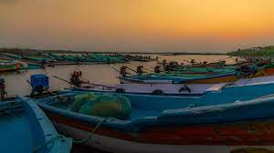
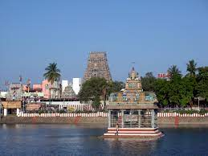
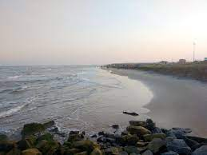
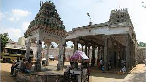
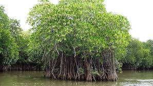
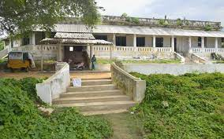
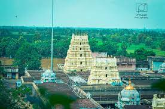

CUDDALORE
Cuddalore is a coastal city located in the Indian state of Tamil Nadu.
Cuddalore, known as the "Gateway to South India," is a charming coastal city located in the southern state of Tamil Nadu
It has a rich history and is known for its cultural heritage. The city is blessed with a long coastline, and one of its
prominent attractions is the Silver Beach.Here are some of the famous places to visit in Cuddalore.
Places you can visit in CUDDALORE:
Pataleeshwarar Temple
Silver Beach
Devanatha Swamy Temple
Pichavaram Mangrove Forest
Fort St. David
The Garden City Amusement Park
Thiruvandipuram Temple

Pataleeshwarar Temple
This ancient temple dedicated to Lord Shiva is a major pilgrimage site in Cuddalore.
It is known for its magnificent architecture and intricate carvings.It is visited by many tourists alike

Silver Beach
Located on the coastline of Cuddalore, Silver Beach is a popular tourist spot.
It offers beautiful views of the Bay of Bengal and is a great place for leisurely walks and picnics.

Devanatha Swamy Temple
Situated in Thiruvanthipuram, a village near Cuddalore, this temple is dedicated to
Lord Vishnu. It is known for its impressive architecture and hosts various religious festivals throughout the year.

Pichavaram Mangrove Forest
About 16 kilometers from Cuddalore, Pichavaram is home to one of the largest mangrove forests
in the world. You can explore the forest by taking a boat ride through the network of canals,
enjoying the serene and picturesque surroundings.

Fort St. David
Located in nearby Tharangambadi (formerly known as Tranquebar), Fort St. David is a
historic fort built by the British in the 17th century. It is a well-preserved monument that
showcases the colonial architecture of the time.

The Garden City Amusement Park
If you're looking for some fun and entertainment,
visit the Garden City Amusement Park in Cuddalore. It offers a range of thrilling rides, water slides,
and recreational activities for people of all ages.
Thiruvandipuram Temple
Situated in the village of Thiruvandipuram, this temple is dedicated
to Lord Vishnu. It is known for its beautiful architecture and hosts various religious festivals,
attracting devotees from far and wide.
